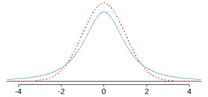

Chapter 7 Estimating Parameters and Determining Sample Sizes
Learning Outcome
Perform calculations to estimate parameters using confidence intervals based on the normal distribution and t-distribution.
In this chapter, we will use sample data to estimate values of population parameters (such as a population proportions or population mean). We will learn how to construct a confidence interval estimate of a population proportion and interpret such confidence interval estimates. Finally, we will learn how to determine the sample size necessary to estimate a population proportion.
Point Estimate
A point estimate is a single value used to estimate a population parameter.
For example, the sample proportion \(\hat p\) is the best point estimate (also called unbiased estimator) of the population proportion \(p\).
Unbiased Estimator: An unbiased estimator is a statistic that targets the value of the corresponding population parameter in the sense that the sampling distribution of the statistic has a mean that is equal to the corresponding population parameter.
For example, the statistic \(\hat p\) targets the population proportion \(p\), \(E(\mathbf {\hat p} ) = p.\)
Also, \(\hat p\) is the consistent estimator of \(p\) because as the sample size \(n\) increases to indefinitely, the resulting sequences of \(\hat p\) converges in probability to \(p\).

Consistent Estimator
\({T_1, T_2, T_3, ...}\) is a sequence of estimators for parameter \(\theta_0\), the true value of which is \(4\). This sequence is consistent: the estimators are getting more and more concentrated near the true value \(\theta_0\). The limiting distribution of the sequence is a degenerate random variable which equals \(\theta_0\) with probability \(1\).
An unbiased estimator can be inconsistent - meaning its expected value is equal to the population parameter, but it does not consistently converge to any value as \(n\) increases.
On the other hand, a consistent estimator can be biased - meaning it consistently converges to the correct population parameter, but its expected value is higher or lower than the targeted value.
Source: Wikipedia
7.1 Confidence Intervals
A point estimate provides a single plausible value for a parameter. However, a point estimate is rarely perfect; usually there is some error in the estimate. In addition to supplying a point estimate of a parameter, a next logical step would be to provide a plausible range of values for the parameter.
A confidence interval or (interval estimate) is a range (or an interval) of values used to estimate the true value of a population parameter. A confidence interval is sometimes abbreviated as CI.
The confidence level is the probability \(1-\alpha\) (such as \(0.95\), or \(95\%\)) that the confidence interval actually does contain the population parameter, assuming that the estimate process is repeated a large number of times. (The confidence level is also called the degree of confidence, or the confidence coefficient.)
\(\alpha : \text { significance level }\)
Constructing a \(95\%\) confidence interval
When the sampling distribution of a point estimate can reasonably be modeled as normal, the point estimate we observe will be within \(1.96\) standard errors of the true value of interest about \(95\%\) of the time. Thus, a \(95\%\) confidence interval for such a point estimate can be constructed:
\(\text {point estimate} \pm 1.96 \times SE\)

95% confidence interval
Critical Value
The values of the \(z\) scores at the borderlines of the confidence interval are called the critical values.
Critical Value
Example: Find the critical value \(z_{\alpha/2}\) corresponding to a \(95\%\) confidence level.
\[ \begin{array} {|c|c|} \hline \text{Confidence Level} & \alpha & \text{Critical Value, } z_{\alpha/2} \\ \hline 90\% & 0.1 & 1.645 \\ \hline 95\% & 0.05 & 1.960 \\ \hline 99\% & 0.01 & 2.575 \\ \hline \end{array}\]
Generalizing Confidence Interval
If the point estimate follows the normal model with standard error \(SE\), then a confidence interval for the population parameter is
\[ \text {point estimate} \pm z{^{\star}_{\alpha/2}} \times SE \]
where \(z^\star\) , the critical value, depends on the confidence level (\(CL\)) selected, and \(\alpha = 1-CL\)
7.1.1 Margin of Error (ME)
The margin of error (ME) is the distance between the point estimate and the lower or upper bound of a confidence interval.
\[ \begin{align} \text{confidence interval} &= \text {point estimate} \pm z{^{\star}_{\alpha/2}} \times SE \\ &= \text {point estimate} \pm \text{margin of error} \end{align} \]
7.2 Estimate a Population Proportion
This section presents methods for using a sample proportion \((\hat p)\) to make an inference about the value of the corresponding population proportion \((p)\).
Assumptions:
- Simple random sample
- The population is at least \(20\) times larger than the sample
- The population can be divided into two mutually exclusive groups and one group in the sample contains \(10\) or more subjects.
Calculating Confidence Interval for a Population Proportion
Example 1: The heart patients who receive stents are \(9\%\) more likely to suffer stroke from usage of the stent than those who do not have it. The estimate’s standard error \((SE)\) is \(0.028\). Construct a \(95\%\) confidence interval for the change in stroke rates from the usage of stent.
\[ \begin{align} \text {95% Confidence Interval} &= \text {point estimate} \pm z^*_{\alpha/2} \times SE \\ &= \hat p \pm z^*_{\alpha/2} \cdot \sqrt{\dfrac{\hat p (1 - \hat p)}{n}} \\ &= 0.090 \pm 1.96 \times 0.028 \\ &=(0.035, 0.145) \end{align} \]
\[ \begin{align} \text {90% Confidence Interval} &= \text {point estimate} \pm 1.645 \times SE \\ &= 0.090 \pm 1.645 \times 0.028 \\ &=(0.044, 0.136) \end{align} \]
Example 2: In a survey of \(800\) parents, \(632\) said that music education has a positive effect on academic performance. Construct a \(95\%\) confidence interval for the proportion of parents who believe that music education has a positive effect.
\[ \begin{align} \hat p = \dfrac{632}{800} = 0.79\\ \text {95% Confidence Interval} &= \text {point estimate} \pm z^*_{\alpha/2} \times SE \\ &= \hat p \pm z^*_{\alpha/2} \cdot \sqrt{\dfrac{\hat p (1 - \hat p)}{n}} \\ &= 0.79 \pm 1.96 \times \sqrt{\dfrac{ .79 (1 - .79 )}{800}} \\ &=(0.762, 0.818) \end{align} \]
We are \(95\%\) confident that the proportion of parents who believe that music education has a positive effect is between \(0.762\) and \(0.818\).
Interpretation of Confidence Intervals
Suppose, the \(95\%\) confidence interval estimate of the population proportion \(p\) is \(0.405 \lt p \lt 0.455\).
\(\textbf {Correct }\) We are \(95\%\) confident that the interval from \(0.405\) to \(0.455\) actually does contain the true value of the population proportion \(p\).
\(\textbf {Wrong }\) There is a \(95\%\) chance that the true value of the population proportion \(p\) will fall between \(0.405\) to \(0.455\).
Method for constructing confidence intervals with small samples
Adjusted sample proportion \(\tilde p\)
The method presented for constructing a confidence interval for a proportion requires that we have at least \(10\) individuals in each category. When this condition is not met, we can still construct a confidence interval by adjusting the sample proportion a bit.
\(\tilde p = \dfrac{x + 2}{n + 4}\)
\[ \text {Confidence Interval} = \tilde p \pm z^*_{\alpha/2} \cdot \sqrt{\dfrac{\tilde p (1 - \tilde p)}{n+4}} \\ \]
7.3 Finding the Sample Size to Estimate a Population Proportion
We assume that the sampling distribution of sample proportion follows a normal distribution, which allows us to use critical \(z\) score to determine the sample size from a given margin of error and confidence level.
Example: A pilot study showed that \(0.5\%\) of credit card offers in the mail end up with the person signing up. To be within \(0.1\%\) of the true rate with \(95\%\) confidence, how big does the test mailing have to be?
\[ \begin{align} ME &= z{^{\star}_{\alpha/2}} \times SE \\ ME &= z{^{\star}_{\alpha/2}} \times \sqrt \frac{\hat p \hat q}{n} \\ 0.001 &= 1.96 \times \sqrt \frac{(0.005)(0.995)}{n} \\ (0.001)^2 &= (1.96)^2 \times \frac{(0.005)(0.995)}{n} \\ n &= (1.96)^2 \times \frac{(0.005)(0.995)}{(0.001)^2} \\ n &= 19112 \end{align} \]
7.4 Estimating a Population Mean
The main goal of this section is to make an inference about the population mean \((\mu)\) from the mean \((\bar x)\) of a sample drawn from the same population.
Therefore, \(\bar x\) is the point estimate of the population \(\mu\).
7.4.1 Estimating a Population Mean When \(\sigma\) Is Known
It is extremely rare that we want to estimate an unknown value of a population mean \(\mu\) but we somehow know the value of the population standard deviation \(\sigma\). If we somehow do know the value of \(\sigma\), the confidence interval is constructed using the standard normal distribution.
Confidence interval estimate of the true population mean \(\mu\):
\[ ME = z_{\alpha/2}.\frac{\sigma}{\sqrt{n}} \text { ; use with known } \sigma \] \[ n = 15, \bar x = 30.9, \sigma = 2.9, CL = 95\% \\ ME = (1.96) \cdot \left( \frac{2.9}{\sqrt{15}} \right) = 1.46760 \\ \bar x - ME < \mu < \bar x + ME \\ 30.9 - 1.46760 < \mu < 30.9 + 1.46760 \\ 29.4 < \mu < 32.4 \]
7.4.2 Estimating a Population Mean When \(\sigma\) Is Not Known
\(\text {The sample mean } \bar x \text { is the best estimate of the population mean } \mu.\)
Normality: The method for finding a confidence interval estimate of \(\mu\) is robust against a departure from normality, which means that the normality requirement is relaxed. The distribution need not be perfectly normal, but it has to be symmetric with one mode.
In this case, population standard deviation \(\sigma\) is estimated from the sample. The sampling distribution employed to calculate the confidence interval of \(\mu\) from sample mean \(\bar x\) is called \(\text{Student } t \text{ Distribution}.\)
\(\text {Student } t- \text { Distribution}\)
According to the Central Limit Theorem, the sampling distribution of a statistic (e.g. sample mean) will follow a normal distribution, as long as the sample size is sufficiently large \((n>30)\).
But sample sizes are sometimes small, and often we do not know the standard deviation of the population. When either of these occurs, statisticians rely on the distribution of the \(\text {t-statistic (t-score)}\) with the degrees of freedom \((n-1)\),
\(t = \dfrac {\bar x - \mu}{s/\sqrt n}\)
\(\text{Degrees of Freedom} = n - 1\)
\(\text {t-distribution }\) is determined by its degrees of freedom. The degrees of freedom refers to the number of independent observations in a set of data.
Properties of the \(t \text {-Distribution:}\)
- The \(\text {Student } t\) distribution has the same general symmetric shape as the standard normal distribution, but with more variability, which is typical of sampling distributions used for small sample size.
- As the sample size \(n\) gets larger, the \(t\) distribution gets closer to the standard normal distribution.
- The mean of the distribution is equal to \(0\).
- Unlike the variance of the standard normal distribution \((\sigma^2 = 1)\), The variance of \(t\) distribution depends on the sample size \((n)\) and is equal to \(\frac {\nu}{\nu-2}\), where \(\nu\) is the DF and \(v \ge 2\).


7.4.3 \(t \text { Confidence Interval}\)
Find a \(95\%\) confidence interval for mirex concentrations in salmon.
\[ \begin{align} n &= 150 \\ \bar x &= 0.0913 \space ppm \\ s &= 0.0495 \space ppm \\ df &= 150 - 1 = 149 \\ \\ SE(\bar x) &= \frac{0.0495}{\sqrt{150}} = 0.0040 \\ t^*_{149} &= 1.976 \\ \end{align} \]
\[ \begin{align} \text {Confidence Interval of } \bar x: \\ &\bar x \pm t^*_{149} \times SE(\bar x) \\ &= 0.0913 \pm 1.976 \times 0.0040 \\ &= 0.0913 \pm 0.0079 \\ &= (0.0834, 0.0992) \end{align} \]
7.4.4 Finding the Sample Size to Estimate a Population Mean
Should you buy a movie download accelerator? To test the download times, find the minimum number of downloads that you need to do during a free trial period to obtain a \(95\%\) CL with a ME < \(8\) minutes. Given, \(\sigma = 10 \space min\)
First, calculate \(n\) using \(z\) score
\[ \begin{align} ME &< 8 \\ \\ \text {with } z^* &= 2 \text { at 95% CL} \\ \\ 2 \times \frac {10}{\sqrt n} &< 8 \\ n &> 6.25 \\ n &\approx 7 \\ \\ \end{align} \]
Sample size turns out to be too small for normal approximation. Therefore, re-estimate \(n\) using \(t\) score. Second, find the critical value of \(t_{\alpha/2}\) corresponding to a \(95\%\) confidence level, given that \(n = 6\).
\[ \begin{align} df &= 7 - 1 = 6 \\ \\ \text {with } t^*_6 &= 2.447 \text { at 95% CL} \\ \\ 2.447 \times \frac {10}{\sqrt n} &< 8 \\ n &> 9.36 \\ n &\approx 10 \\ \\ \end{align} \]
Hence, at least 10 trial downloads need to be run to make sure ME remains less than \(8\) min.
Choosing between Student \(t\) and \(z\) Distributions
\[ \begin{array}{l|c} \text{conditions} & \text{method} \\ \hline \sigma \text{ not known; normally distributed population or n > 30} & t \\ \hline \sigma \text{ known; normally distributed population or n >30} & z \end{array} \]
7.5 Estimating a Population Standard Deviation or Variance
This section presents methods for using a sample standard deviation \(s\) (or a sample variance \(s^2\)) to estimate the value of the corresponding population standard deviation \(\sigma\) (or population variance \(\sigma^2\)).
Point Estimate: The sample variance \(s^2\) is the best point estimator of the population variance \(\sigma^2\). The sample standard deviation \(s\) is commonly used as a point estimate of \(\sigma\), even though it is a biased estimator.
Confidence Interval: When constructing a confidence interval estimate of a population standard deviation (or population variance), we construct the confidence interval using the \(\chi^2 \text{ distribution}\).
Chi-Squared \(\chi^2\) Distribution
- In a normally distributed population with variance \(\sigma^2\), if we randomly select independent samples of size \(n\) and, for each sample, compute the sample variance \(s^2\), the sample statistic \(\chi^2 = (n -1)s^2/{\sigma^2}\) has sampling distribution called the chi-squared distribution,
\[ \chi^2 = \frac{(n-1)s^2}{\sigma^2} \]
- \(\text{Degrees of freedom: df } = n -1\)
- \(\chi^2 \text{ distribution }\) is skewed to the right, unlike normal and student \(t\) distributions.
- \(\chi^2 \ge 0\)
- The chi-squared distribution is different for each number of degrees of freedom. As the degrees of freedom increases, chi-squared distribution approaches a normal distribution.
Critical Chi-Squared \(\chi^2\) Values
The critical values for a level \(100(1-\alpha)\%\) confidence interval are the values that contain the middle \(100(1-\alpha)\%\) of the area under the curve between them.
The notation for the critical values tells how much area is to the right of the critical value. For a level \(1-\alpha\) confidence interval, the critical values are denoted \(\chi^2_{1-\alpha/2}\) and \(\chi^2_{\alpha/2}\)
7.5.1 Confidence Interval for Estimating a Population Standard Deviation or Variance
Let \(s^2\) be the sample variance from a simple random sample of size \(n\) from a normal population. A level \(100(1-\alpha)\%\) confidence interval for the population variance \(\sigma^2\) is
Confidence Interval for the Population Variance \(\sigma^2\)
\[ \frac{(n-1)s^2}{\chi^2_{\alpha/2}} < \sigma^2 < \frac{(n-1)s^2}{1- \alpha/2} \]
Confidence Interval for the Population Variance \(\sigma\)
\[ \sqrt{\frac{(n-1)s^2}{\chi^2_{\alpha/2}}} < \sigma < \sqrt{\frac{(n-1)s^2}{\chi^2_{1-\alpha/2}}} \]
The critical values are taken from a chi-square distribution with \(n ??? 1\) degrees of freedom.
Example 1: Confidence Interval for Estimating a Population Standard Deviation or Variance
\[ \begin{align} &s = 14.29263 \\ &n = 22 \\ &CL = 95\% \\ \\ &\frac{(n-1)s^2}{\chi^2_{\alpha/2}} < \sigma^2 < \frac{(n-1)s^2}{\chi^2_{1-\alpha/2}} \\ \\ or, \ &\frac{21.(14.29263)^2}{35.479} < \sigma^2 < \frac{21.(14.29263)^2}{10.283} \\ \\ or, \ &120.9 < \sigma^2 < 417.2 \\ or, \ &11.0 < \sigma < 20.4 \end{align} \]
Example 2: The compressive strengths of seven concrete blocks, in pounds per square inch, are measured, with the following results.
\(1989.9 \ 1993.8 \ 2074.5 \ 2070.5 \ 2070.9 \ 2033.6 \ 1939.6\)
Assume these values are a simple random sample from a normal population. Construct a \(95\%\) confidence interval for the population standard deviation.
Solution:
\[ s^2 = \dfrac{\sum(x - \bar x)^2}{7-1} = 2699.8648 \] Next, find \(\chi^2_{0.975}\) and \(\chi^2_{0.0025}\) for \(\text {df} = 6\).
From the table, \(\chi^2_{0.975} = 1.237\) and \(\chi^2_{0.0025} = 14.449\).
\[ \begin{align} \frac{(n-1)s^2}{\chi^2_{\alpha/2}} & < \sigma^2 < \frac{(n-1)s^2}{\chi^2_{1-\alpha/2}} \\ \\ \frac{(7-1)(2699.8648)^2}{14.449} & < \sigma^2 < \frac{(7-1)(2699.8648)^2}{1.237} \\ \\ or, \ 1121.129 & < \sigma^2 < 13095.545 \\ or, \ 33.48 & < \sigma < 114.44 \end{align} \]
We are \(95\%\) confident that the population standard deviation of the strengths of the concrete blocks is between \(33.48\) and \(114.44\).